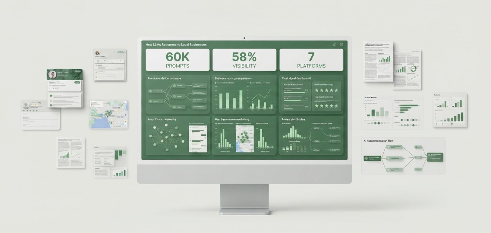
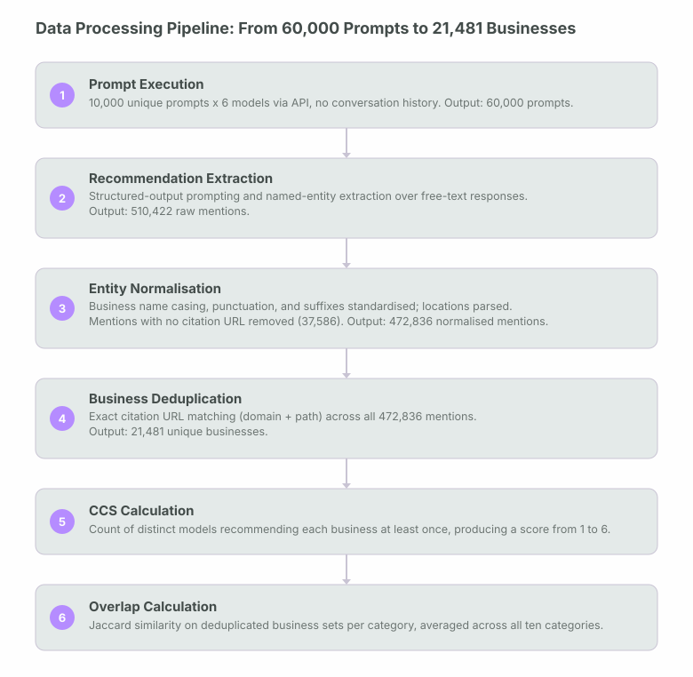
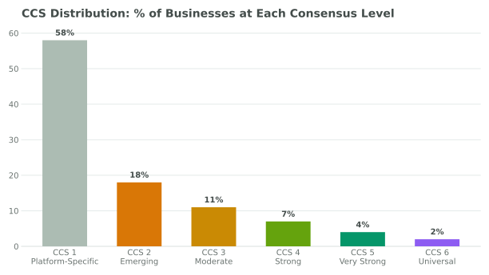
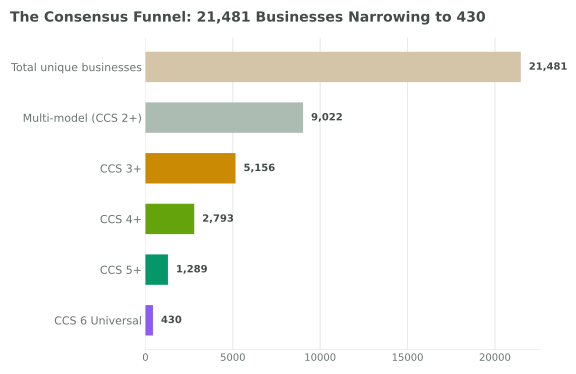
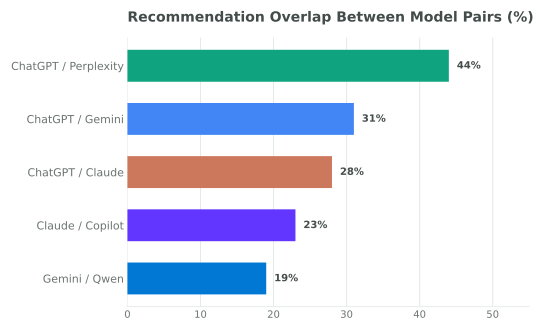
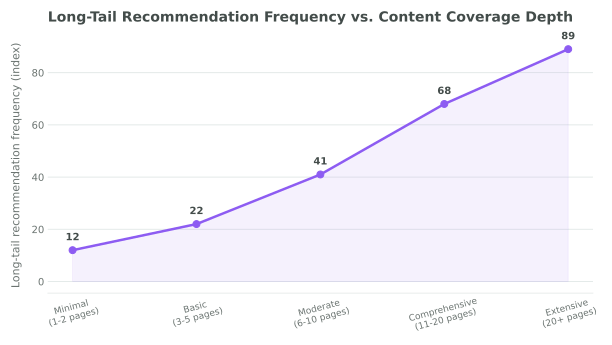
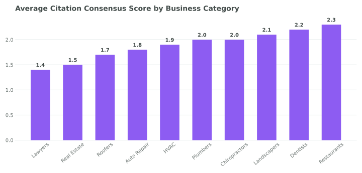
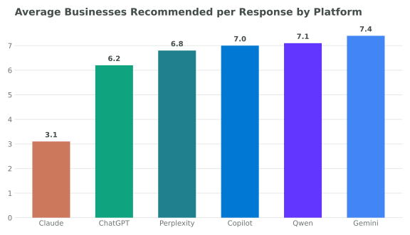
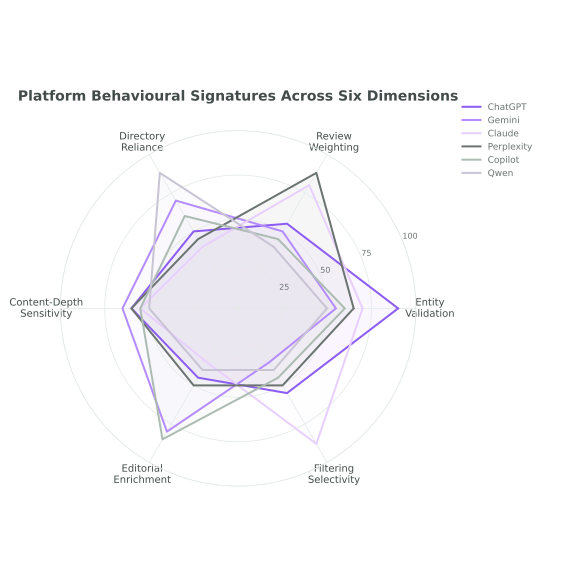
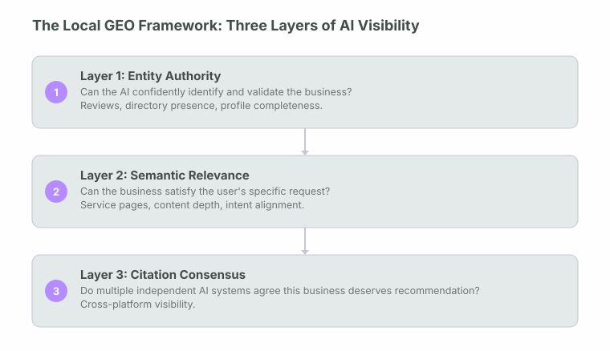

A 60,000-prompt-execution analysis across ChatGPT, Gemini, Claude, Perplexity, Microsoft Copilot, and Qwen, examining how AI systems select, validate, and recommend local businesses.

60,000 prompt executions across six major AI platforms, spanning ten high-commercial-intent local categories, producing 472,836 individual business recommendations.
58% of recommended businesses appeared in only one AI platform. No pair of models exceeded 50% recommendation overlap. All four initial hypotheses I held going into this study were contradicted by the data. The businesses that achieved cross-platform visibility shared three characteristics: strong entity authority, strong semantic relevance, and high citation consensus.
There is no single AI ranking system for local businesses.
Local search is entering a new era. For nearly two decades, local visibility was governed by search engines, local map packs, directory listings, and review platforms. Today, consumers increasingly ask AI assistants directly: "Who is the best landscaper near me?", "Which dentist should I choose?", "Find me a highly rated HVAC contractor." As AI assistants become recommendation engines in their own right, a new question emerges: how do AI systems decide which local businesses to recommend?
I ran 60,000 prompt executions across six major AI platforms (ChatGPT, Gemini, Claude, Perplexity, Microsoft Copilot, and Qwen), spanning ten high-commercial-intent local categories. The result: 472,836 individual business recommendations, 21,481 unique businesses after entity resolution and deduplication, and a clear answer to the central question.
The answer is not what I expected. Before the study, the prevailing assumption was that review count would be the strongest predictor of recommendation frequency, that AI systems would largely agree with one another the way search engines converge on similar rankings, and that strong local SEO would translate fairly directly into AI visibility. None of these held. The central finding is that there is no single AI ranking system for local businesses. There are multiple, largely independent recommendation ecosystems, each governed by different retrieval logic, validation criteria, and recommendation thresholds.
58% of recommended businesses appeared in only one AI platform. No pair of models exceeded 50% recommendation overlap. All four initial hypotheses were contradicted by the data. The businesses that achieved cross-platform visibility shared three characteristics: strong entity authority, strong semantic relevance, and high citation consensus. This three-layer structure forms the Local GEO Framework presented in Section 10.
What this study contributes to GEO research.
What I set out to answer.
The GEO industry has, to date, focused heavily on citations, schema markup, reviews, and Google Business Profile optimisation, largely extrapolating tactics from traditional local SEO into an AI-recommendation context. I designed this study to understand the broader ecosystem, across multiple AI platforms simultaneously rather than a single model.
Initial hypotheses. I established four hypotheses before data collection began, based on prevailing assumptions in the local SEO and GEO industry.
All four were contradicted by the data. Section 11 documents each in detail.
Scale, scope, and prompt construction.
| Metric | Value | Detail |
|---|---|---|
| Business Categories | 10 | Landscapers, Dentists, HVAC, Plumbers, Roofers, Restaurants, Lawyers, Chiropractors, Auto Repair, Real Estate Agents |
| Unique Prompts per Category | 1,000 | Designed to replicate realistic consumer query variation, not keyword lists |
| AI Models Tested | 6 | ChatGPT, Gemini, Claude, Perplexity, Microsoft Copilot, Qwen |
| Market | 1 | San Diego, CA, accessed via VPN; see Geographic Scope in Section 14 |
| Total Prompt Executions | 60,000 | 10 categories x 1,000 prompts x 6 models |
| Recommendations Extracted | 472,836 | Individual business mentions parsed from all model responses |
| Unique Businesses | 21,481 | Deduplicated entity set across all platforms and categories |
The ten categories were selected because they represent high-commercial-intent local searches, decisions where the recommendation directly and immediately influences a purchase or hiring decision. Each prompt set was executed identically across all six models to eliminate prompt variation as a source of bias. All 60,000 prompts were executed from a single market, San Diego, CA, via VPN, rather than distributed across multiple cities or regions; see Geographic Scope in Section 14 for what this means for how the findings generalise.
Five query types per category. For each category, 1,000 unique prompts were constructed across five query type families to capture the genuine range of how consumers phrase local business queries to AI assistants.
| Query Type | Example Prompts |
|---|---|
| Recommendation | "Best provider near me" / "Top-rated provider" / "Most trusted provider" |
| Cost-Based | "Affordable provider" / "Best value provider" / "Budget-friendly provider" |
| Specialty | "Emergency provider" / "Family-owned provider" / "Eco-friendly provider" |
| Service-Specific | "Installation specialist" / "Maintenance specialist" / "Repair specialist" |
| Location-Based | "Provider near downtown" / "Provider in my neighbourhood" / "Provider serving my city" |
Validation tooling. Data collected in this study was compiled into spreadsheets for processing. An LLM was used to assist in validating the collected data and calculations, including cross-checking extraction, normalisation, and deduplication outputs against the underlying dataset for accuracy and completeness. This is standard practice in data-heavy research today and supplements, but does not replace, the specific validation steps described in Section 5 (such as the citation URL matching applied to the complete dataset).
From 60,000 prompt executions to 21,481 unique businesses.
The headline figures in this study represent the output of a six-stage processing pipeline, not a single measurement. Each stage introduces specific decisions about extraction, normalisation, and matching that materially affect the final numbers. I’m documenting the full pipeline here so the path from raw model output to the reported metrics is traceable rather than asserted.

The gap between Stage 2 (510,422 raw mentions) and Stage 3 (472,836 normalised mentions) is 37,586 mentions. These were removed during normalisation because they had no citation URL attached; since web search was enabled for every model, a mention with no linkable source could not be verified against a real business or checked for duplicates, so it was treated as a junk response for the purposes of this study and dropped rather than carried forward. The gap between Stage 3 and Stage 4 (21,481 unique businesses) reflects the same physical business being mentioned repeatedly across prompts, models, and categories.
Deduplication accuracy. Since web search was enabled for every model, all 472,836 normalised mentions carried a citation URL, because mentions without one were already removed at the Stage 2→3 step above. These URLs were normalised (protocol, www-prefix, and tracking parameters stripped) and checked for exact domain-plus-path duplicates across the complete set of 472,836 mentions, using Excel's duplicate-detection function. This was applied to every mention, not a sample. Because the check required an exact path match rather than just a matching domain, two different businesses both cited via the same directory (for example, two different Yelp listings) were not merged together. Matching was performed on the citation URL as returned by the model, not on the underlying real-world business. No redirect resolution and no cross-referencing between a business's own website and its third-party directory listings (Yelp, Google Business Profile, Facebook, and similar) was performed, so the same real business cited via two different URLs was recorded as two separate businesses rather than one. See Deduplication Accuracy and Cross-Platform Overlap in Section 14 for how this affects the reported figures.
A metric used to quantify cross-platform agreement in this study.
During the first phase of analysis, an unexpected pattern emerged: for identical prompts, different AI systems frequently returned completely different businesses. My initial assumption was that this reflected random variation in model sampling. Reviewing the extracted mentions, with an LLM assisting in surfacing and cross-checking the pattern across the dataset, showed the pattern was structural rather than random. Some businesses repeatedly appeared across multiple LLMs while others appeared in only a single platform, consistently, across many different prompt variations.
"This observation is what Citation Consensus Score is designed to measure: whether independent AI systems agree that a business deserves to be recommended at all."
Citation Consensus Score (CCS) measures how many independent AI systems recommend the same business for a given category and query type. Unlike a ranking position, which measures where a business appears within one system’s results, CCS measures whether multiple, architecturally independent AI systems agree that a business is worth recommending at all.
| CCS Level | Consensus Tier | % of Businesses |
|---|---|---|
| 1 | Platform-Specific Citation | 58% |
| 2 | Emerging Consensus | 18% |
| 3 | Moderate Consensus | 11% |
| 4 | Strong Consensus | 7% |
| 5 | Very Strong Consensus | 4% |
| 6 | Universal Consensus | 2% |
CCS Distribution: % of Businesses at Each Consensus Level

The distribution is heavily right-skewed. 58% of businesses cluster at CCS 1, meaning the majority of all recommended businesses are visible in only one AI platform. Only 2% achieved Universal Consensus across all six platforms I tested.
The Consensus Funnel. Expressed as an attrition funnel, the scale of the drop-off from "exists in the dataset" to "universally recommended" becomes sharper. A gradual narrowing would be the more intuitive shape; the actual funnel narrows steeply at the first step alone: more than half of all businesses are eliminated from cross-platform visibility before the funnel even reaches its second stage.
The Consensus Funnel: 21,481 Businesses Narrowing to 430 with Universal Consensus

Of 21,481 unique businesses: 9,022 (42%) achieved multi-model recommendation (CCS 2+). Just 5,156 (24%) reached CCS 3+, 2,793 (13%) reached CCS 4+, 1,289 (6%) reached CCS 5+, and only 430 businesses (2%) achieved Universal Consensus across all six platforms.
Six findings from 472,836 recommendations.
Recommendation Overlap Between Model Pairs (%)

No model pair exceeded 50% overlap. The highest pairing (ChatGPT and Perplexity) reached 44%. The lowest (Gemini and Qwen) reached 19%. These figures are drawn from the aggregate dataset across all ten categories; this report does not include a category-by-category breakdown of pairwise overlap, so I cannot confirm the pattern held with the same magnitude in every individual category. One further caveat applies to all of these overlap figures: deduplication matched on the citation URL as returned by the model, not on the underlying real-world business, with no redirect resolution and no cross-referencing between a business's own website and its third-party directory listings. So if two different platforms cited the same real business via two different URLs (for example, its own website versus its Yelp listing), that business was not merged into one canonical record. That would cause a genuine cross-platform recommendation to be counted here as two separate, platform-specific businesses instead of one shared one, understating overlap and overstating fragmentation, rather than the reverse. See Deduplication Accuracy and Cross-Platform Overlap in Section 14 for detail; this has not been separately quantified, so the true overlap and fragmentation figures could be somewhat higher and lower, respectively, than reported here.
Long-Tail Recommendation Frequency vs. Content Coverage Depth
Recommendation frequency for niche and long-tail prompts plotted against content coverage depth (distinct service, location, and specialty pages). The relationship is monotonic and steep: content depth is not a marginal factor but a primary driver of long-tail recommendation frequency.

How recommendation behaviour varies by category and platform.
The findings in Section 7 describe the dataset in aggregate. Disaggregating by category and by model surfaces two further patterns that did not emerge from the pooled data alone.
Average Citation Consensus Score by category. One assumption worth testing was whether Citation Consensus stays relatively uniform across categories, on the theory that fragmentation is primarily a property of how AI systems behave rather than a property of any particular local service vertical. The data does not support this: average CCS varied meaningfully by category. Categories with higher review-platform standardisation and clearer, more uniform service definitions (restaurants, dentists) showed materially higher average consensus than categories with more variable service scope and naming conventions (lawyers, real estate agents).
Average Citation Consensus Score by Business Category

Restaurants and dentists, categories with standardised review-platform presence and relatively uniform service definitions, achieved the highest average consensus. Lawyers and real estate agents, where service scope and naming conventions vary widely, achieved the lowest, consistent with these categories presenting AI systems with a harder entity-resolution and semantic-matching problem.
Model citation volume: businesses recommended per response. A reasonable starting assumption is that all six models would return a broadly similar number of businesses per response, since the underlying prompts were identical. That did not hold: average recommendation set size varied by more than 2.3x between the most conservative and most generous model (Claude at 3.1 versus Gemini at 7.4).
Average Businesses Recommended per Response by Platform

Claude's smaller average set size (3.1) is consistent with a higher filtering threshold, though this study did not directly measure filtering behaviour and this remains an interpretation rather than a confirmed mechanism. Gemini's larger average (7.4) is consistent with a listing-style approach, often returning broader sets resembling directory listings rather than a short curated recommendation. A business's odds of appearing in any single response are partly a function of how large that model's typical recommendation set is, independent of the business’s actual quality signals.
Six platforms, six distinct discovery engines.
Each of the six platforms displayed a distinct, dominant recommendation tendency across the aggregate dataset, reinforcing the core finding that these behave like six different discovery engines, not six interfaces to one shared ranking system. These labels describe the strongest pattern observed for each platform across 10,000 prompts; they are simplifications of a messier reality, and any individual response from a given platform will not always match its labelled tendency.
| Platform | Dominant Tendency | Key Signal | Pattern |
|---|---|---|---|
| ChatGPT | Favours multi-source corroboration | Entity validation | Surfaces businesses supported by multiple independent sources rather than a single strong source |
| Gemini | Listing-style enrichment | Business profile completeness | Responses resemble enriched local business listings with profiles, service areas, and operational detail |
| Claude | High filtering threshold | Reputation emphasis | Smaller, more selective recommendation sets; behaves more like a recommender than a search engine |
| Perplexity | Review-led prioritisation | Consumer trust metrics | Prioritises review signals and reputation indicators over other entity signals |
| Microsoft Copilot | Editorial enrichment | Third-party contextual detail | Incorporates editorial descriptions and rich third-party business information |
| Qwen | Directory-anchored | Search-indexed presence | Stronger reliance on directory data and public, search-indexed business references |
Platform Behavioural Signatures Across Six Dimensions

The scores behind this chart are a relative, qualitative characterisation of how strongly each platform leaned on a given signal across the dataset, not a separately validated or externally benchmarked scoring system; no independent scoring methodology is published alongside this report, so the chart should be read as illustrative of relative emphasis rather than as a precise, reproducible measurement. With that caveat, no two platforms share the same shape across entity validation weight, review/reputation weighting, directory data reliance, content-depth sensitivity, editorial enrichment tendency, and filtering selectivity, consistent with each model functioning as a structurally distinct discovery engine.
Three layers that determine local AI visibility.
After analysing all 472,836 recommendations, a clear three-layer framework emerged describing what determines local AI visibility. Each layer answers a different question an AI system implicitly asks before recommending a business.

Layer 1: Entity Authority: "Can the AI confidently identify and validate the business?" Signals include reviews, directory presence, business profile completeness, and service area definition. This layer determines whether an AI system can resolve the business as a real, verifiable, confidently-identifiable entity before it can be recommended at all.
Layer 2: Semantic Relevance: "Can the business satisfy the user’s specific request?" Signals include service pages, content depth, geographic relevance, and intent alignment. This layer determines whether the business is actually a good match for the specific, often long-tail, intent behind the user’s query, not just whether it exists.
Layer 3: Citation Consensus: "Do multiple independent AI systems agree this business deserves recommendation?" Signals include cross-platform visibility, recommendation overlap, and entity consistency across ecosystems. In this study, this layer is the one most directly correlated with durable, defensible AI visibility.
"Entity authority alone was insufficient, and semantic relevance alone was insufficient. The businesses that achieved durable, cross-platform AI visibility consistently demonstrated all three layers simultaneously. A business strong on only one or two layers achieved fragmented, platform-specific visibility at best."
Four industry assumptions the data rejected.
Several pre-study assumptions, widely held across the local SEO and GEO industry, failed to hold up against the data. I’m documenting each explicitly because these are actively shaping how businesses invest in AI visibility today, and the data says they are wrong.
| Hypothesis | Expected | Observed | Status |
|---|---|---|---|
| H1: Review count dominance | Highest review-count businesses dominate recommendations | Review count alone showed weak predictive power. Multi-platform review presence and recency mattered more than raw count. | Rejected |
| H2: High cross-model overlap | Overlap would exceed 50% across model pairs | No model pair exceeded 50%. Highest pairing (ChatGPT and Perplexity) reached 44%. | Rejected |
| H3: Google-ecosystem convergence | Google-oriented systems (Gemini) would converge with other web-connected models | Gemini and Qwen overlap was the lowest measured pairing at 19%. No Google-affinity convergence observed. | Rejected |
| H4: SEO universality | Strong local SEO creates consistent visibility across all AI platforms | Recommendation fragmentation (58%) and platform-specific behavioural profiles contradict universal visibility from SEO alone. | Rejected |
Every hypothesis assumed AI recommendation behaviour would mirror the shared-ranking logic of traditional search. None held.
What businesses should do differently.
These recommendations are derived directly from the data and are structured around the three-layer Local GEO Framework. As noted in Section 14, this study observed correlations between these characteristics and CCS; it did not experimentally manipulate any of them. These are presented as the strongest patterns found among high-CCS businesses, not as proven causal levers, and results for any individual business may vary.
Layer 1: Build entity authority
Layer 2: Build semantic relevance
Layer 3: Build citation consensus
Definitions used in this study.
| Term | Definition as used in this study |
|---|---|
| Citation Consensus Score (CCS) | The number of distinct AI platforms (out of six) that recommended a given business at least once across any prompt in its category. Ranges from 1 (platform-specific) to 6 (universal consensus). Measures cross-platform agreement, not within-platform frequency. |
| Recommendation Fragmentation Rate (RFR) | The percentage of all recommended businesses that appeared in only one AI platform. In this study: 58%. Measures how concentrated AI recommendations are within single platforms rather than shared across them. |
| Entity Authority | Layer 1 of the Local GEO Framework. The degree to which an AI system can confidently identify, validate, and resolve a business as a real, verifiable entity before recommending it. Driven by business name consistency, directory presence, profile completeness, and multi-platform review footprint. |
| Semantic Relevance | Layer 2 of the Local GEO Framework. The degree to which a business’s content signals match the specific intent behind a user’s query. Driven by service pages, geographic coverage pages, and specialty or expertise content. |
| Pairwise Overlap | The proportion of one model’s recommended business set that also appears in another model’s recommended business set for the same category, calculated using Jaccard similarity and averaged across all ten categories. |
| Entity Normalisation | The process of standardising business name variants (casing, punctuation, legal suffixes) across all model outputs to enable accurate deduplication into canonical business records. |
| Citation URL Matching | Deduplication by comparing normalised citation URLs (domain plus exact path) rather than domain alone, so that different businesses sharing a directory domain (for example, two different Yelp listings) are not incorrectly merged. Matches on the URL as returned by the model, with no redirect resolution and no cross-referencing between a business's own website and its third-party directory listings. Used as the sole deduplication method in this study, applied to all 472,836 normalised mentions. |
| AI Non-Determinism | The property of AI systems whereby the same prompt executed twice may produce different outputs. Relevant to this study because recommendation sets may vary between runs for the same model and prompt. |
Scope boundaries and caveats.
The local AI visibility landscape is fragmented, and that matters.
The central finding of this study is straightforward to state: there is no single AI ranking system for local businesses. There are multiple, largely independent recommendation ecosystems, each governed by different retrieval, validation, and recommendation logic. Businesses that consistently appeared across AI systems demonstrated strong entity authority, strong semantic relevance, and high citation consensus simultaneously, not any single trait in isolation.
As AI assistants continue replacing traditional discovery workflows for local services, local visibility will become less about ranking highly in a single platform and more about earning independent recommendation across an entire, fragmented AI ecosystem. The future winners in local AI visibility will not be the businesses that rank highest in one system. They will be the businesses that achieve visibility across the full breadth of AI platforms consumers actually use.
"There is no single AI ranking system for local businesses. There are six largely independent recommendation ecosystems, each with its own logic. Businesses that ignored this fragmentation were invisible to the majority of AI platforms, regardless of how strong their local SEO was."
From what I observed across 60,000 prompt executions and six platforms, the businesses with the highest Citation Consensus Scores shared three things: a consistent, easily resolvable entity identity across the web; content that specifically and comprehensively answered the kinds of queries users were actually asking; and a broad, multi-platform presence that gave multiple independent AI systems corroborating evidence to recommend them. None of these is a new concept individually. What this dataset shows is that all three were required simultaneously for the businesses that achieved durable cross-platform visibility here, and that being strong on only one or two produced fragmented, platform-specific visibility that a single model update can eliminate.
GEO
Retrieval Research Series
004: How LLMs Recommend Local Businesses
21,481
Unique Businesses · CCS Range 1 to 6 · 58% Fragmentation Rate
Six independent AI platforms, tested identically across ten local categories, revealed six structurally distinct recommendation ecosystems rather than one shared ranking.
Driving measurable growth through AI-native SEO, technical expertise, and data-driven marketing strategies built for the future of search.


Akshay helped us completely rethink our online presence. Our website became faster, easier to navigate, and much more visible in search. Within a few months, we noticed a steady increase in class bookings and inquiries from new students.
We relied almost entirely on referrals until Akshay optimized our website and local SEO. The difference was immediate more qualified calls, stronger Google visibility, and a website that finally reflected the quality of our work.
Akshay understood exactly how to present our expertise online. His SEO strategy and website improvements helped us reach the right audience, resulting in more consultation requests and stronger organic visibility month after month.
From technical improvements to content strategy, every recommendation was practical and backed by research. Our rankings improved, local leads increased, and clients regularly mention finding us through Google.
Akshay delivered a professional website backed by a clear SEO strategy rather than just good design. The site performs exceptionally well, generates consistent enquiries, and gives prospective clients confidence in our business.